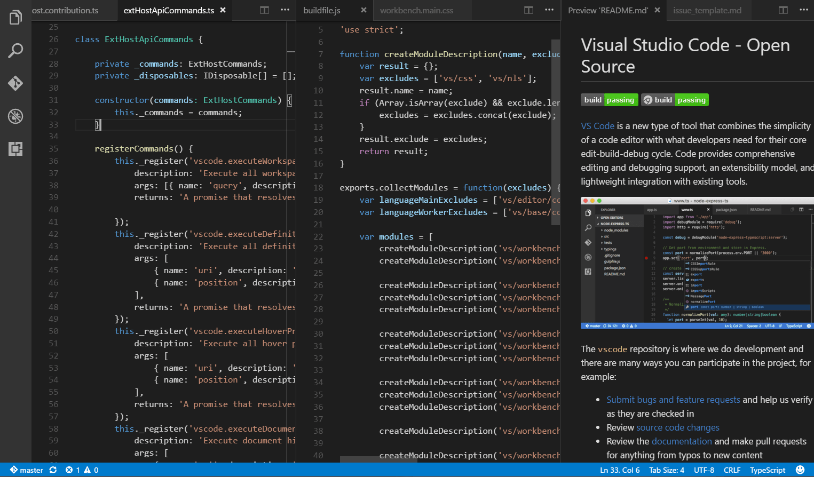
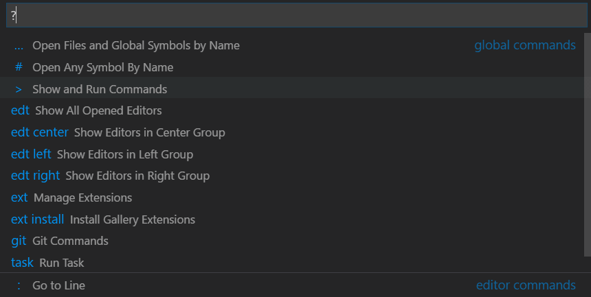
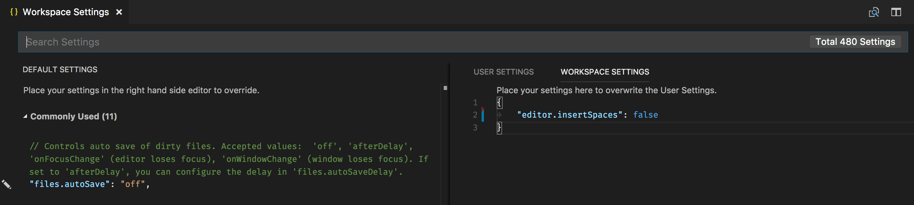
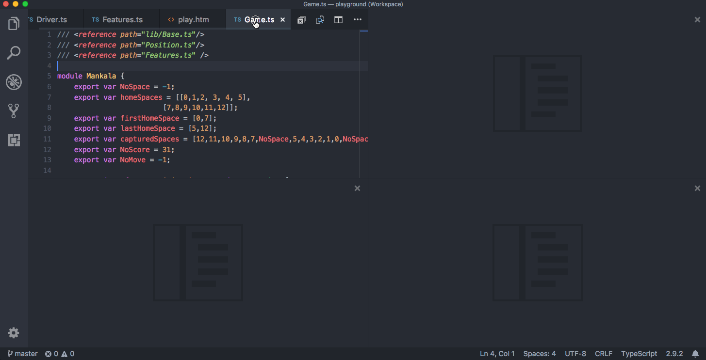

User Interface
At its heart, Visual Studio Code is a code editor. Like many other code editors, VS Code adopts a common user interface and layout of an explorer on the left, showing all of the files and folders you have access to, and an editor on the right, showing the content of the files you have opened.

Basic Layout
VS Code comes with a simple and intuitive layout that maximizes the space provided for the editor while leaving ample room to browse and access the full context of your folder or project. The UI is divided into five areas:
- Editor - The main area to edit your files. You can open as many editors as you like side by side vertically and horizontally.
- Side Bar - Contains different views like the Explorer to assist you while working on your project.
- Status Bar - Information about the opened project and the files you edit.
- Activity Bar - Located on the far left-hand side, this lets you switch between views and gives you additional context-specific indicators, like the number of outgoing changes when Git is enabled.
- Panels - You can display different panels below the editor region for output or debug information, errors and warnings, or an integrated terminal. Panel can also be moved to the right for more vertical space.
Each time you start VS Code, it opens up in the same state it was in when you last closed it. The folder, layout, and opened files are preserved.
Open files in each editor are displayed with tabbed headers (Tabs) at the top of the editor region. To learn more about tabbed headers, see the Tabs section below.
Tip: You can move the Side Bar to the right hand side (View > Move Side Bar Right) or toggle its visibility (B (Windows, Linux Ctrl+B)).
Side by side editing
You can open as many editors as you like side by side vertically and horizontally. If you already have one editor open, there are multiple ways of opening another editor to the side of the existing one:
- Alt click on a file in the Explorer.
- \ (Windows, Linux Ctrl+\) to split the active editor into two.
- Open to the Side (Enter (Windows, Linux Ctrl+Enter)) from the Explorer context menu on a file.
- Click the Split Editor button in the upper right of an editor.
- Drag and drop a file to any side of the editor region.
- Ctrl+Enter (macOS: Cmd+Enter) in the Quick Open (P (Windows, Linux Ctrl+P)) file list.

Whenever you open another file, the editor that is active will display the content of that file. So if you have two editors side by side and you want to open file 'foo.cs' into the right-hand editor, make sure that editor is active (by clicking inside it) before opening file 'foo.cs'.
By default editors will open to the right-hand side of the active one. You can change this behavior through the setting workbench.editor.openSideBySideDirection and configure to open new editors to the bottom of the active one instead.
When you have more than one editor open you can switch between them quickly by holding the Ctrl (macOS: Cmd) key and pressing 1, 2, or 3.
Tip: You can resize editors and reorder them. Drag and drop the editor title area to reposition or resize the editor.
Minimap
A Minimap (code outline) gives you a high-level overview of your source code, which is useful for quick navigation and code understanding. A file's minimap is shown on the right side of the editor. You can click or drag the shaded area to quickly jump to different sections of your file.

Tip: You can move the minimap to the left hand side or disable it completely by respectively setting
"editor.minimap.side": "left"or"editor.minimap.enabled": falsein your user or workspace settings.
Indent Guides
The image above also shows indentation guides (vertical lines) which help you quickly see matching indent levels. If you would like to disable indent guides, you can set "editor.guides.indentation": false in your user or workspace settings.
Breadcrumbs
The editor has a navigation bar above its contents called Breadcrumbs. It shows the current location and allows you to quickly navigate between folders, files, and symbols.

Breadcrumbs always show the file path and if the current file type has language support for symbols, the symbol path up to the cursor position. You can disable breadcrumbs with the View > Show Breadcrumbs toggle command. For more information about the breadcrumbs feature, such as how to customize their appearance, see the Breadcrumbs section of the Code Navigation article.
Explorer
The Explorer is used to browse, open, and manage all of the files and folders in your project. VS Code is file and folder based - you can get started immediately by opening a file or folder in VS Code.
After opening a folder in VS Code, the contents of the folder are shown in the Explorer. You can do many things from here:
- Create, delete, and rename files and folders.
- Move files and folders with drag and drop.
- Use the context menu to explore all options.
Tip: You can drag and drop files into the Explorer from outside VS Code to copy them (if the explorer is empty VS Code will open them instead)

VS Code works very well with other tools that you might use, especially command-line tools. If you want to run a command-line tool in the context of the folder you currently have open in VS Code, right-click the folder and select Open in Command Prompt (or Open in Terminal on macOS or Linux).
You can also navigate to the location of a file or folder in the native Explorer by right-clicking on a file or folder and selecting Reveal in Explorer (or Reveal in Finder on macOS or Open Containing Folder on Linux).
Tip: Type P (Windows, Linux Ctrl+P) (Quick Open) to quickly search and open a file by its name.
By default, VS Code excludes some folders from the Explorer (for example. .git). Use the files.exclude setting to configure rules for hiding files and folders from the Explorer.
Tip: This is really useful to hide derived resources files, like
\*.metain Unity, or\*.jsin a TypeScript project. For Unity to exclude the\*.cs.metafiles, the pattern to choose would be:"**/*.cs.meta": true. For TypeScript, you can exclude generated JavaScript for TypeScript files with:"**/*.js": {"when": "$(basename).ts"}.
Multi-selection
You can select multiple files in the File Explorer and OPEN EDITORS view to run actions (Delete, Drag and Drop, Open to the Side) on multiple items. Use the Ctrl/Cmd key with click to select individual files and Shift + click to select a range. If you select two items, you can now use the context menu Compare Selected command to quickly diff two files.
Note: In earlier VS Code releases, clicking with the Ctrl/Cmd key pressed would open a file in a new Editor Group to the side. If you would still like this behavior, you can use the workbench.list.multiSelectModifier setting to change multi-selection to use the Alt key.
"workbench.list.multiSelectModifier": "alt"
Advanced tree navigation
You can filter the currently visible files in the File Explorer. With the focus on the File Explorer, press Ctrl/Cmd+F to open the tree Find control and type part of the file name you want to match. You will see a Find control in the top-right of the File Explorer showing what you have typed and matching file names will be highlighted. Pressing the Filter button will toggle between the two modes: highlighting and filtering. Pressing DownArrow will let you focus the first matched element and jump between matching elements.
This navigation feature is available for all tree views in VS Code, so feel free to try it out in other areas of the product.

Outline view
The Outline view is a separate section in the bottom of the File Explorer. When expanded, it will show the symbol tree of the currently active editor.

The Outline view has different Sort By modes, optional cursor tracking, and supports the usual open gestures. It also includes an input box which finds or filters symbols as you type. Errors and warnings are also shown in the Outline view, letting you see at a glance a problem's location.
For symbols, the view relies on information computed by your installed extensions for different file types. For example, the built-in Markdown support returns the Markdown header hierarchy for a Markdown file's symbols.

There are several Outline view settings which allow you to enable/disable icons and control the errors and warnings display (all enabled by default):
outline.icons- Toggle rendering outline elements with icons.outline.problems.enabled- Show errors and warnings on outline elements.outline.problems.badges- Toggle using badges for errors and warnings.outline.problems.colors- Toggle using colors for errors and warnings.
Open Editors
At the top of the Explorer is a view labeled OPEN EDITORS. This is a list of active files or previews. These are files you previously opened in VS Code that you were working on. For example, a file will be listed in the OPEN EDITORS view if you:
- Make a change to a file.
- Double-click a file's header.
- Double-click a file in the Explorer.
- Open a file that is not part of the current folder.
Just click an item in the OPEN EDITORS view, and it becomes active in VS Code.
Once you are done with your task, you can remove files individually from the OPEN EDITORS view, or you can remove all files by using the View: Close All Editors or View: Close All Editors in Group actions.
Views
The File Explorer is just one of the Views available in VS Code. There are also Views for:
- Search - Provides global search and replace across your open folder.
- Source Control - VS Code includes Git source control by default.
- Run - VS Code's Run and Debug View displays variables, call stacks, and breakpoints.
- Extensions - Install and manage your extensions within VS Code.
- Custom views - Views contributed by extensions.
Tip: You can open any view using the View: Open View command.
You can show or hide views from within the main view and also reorder them by drag and drop.

Activity Bar
The Activity Bar on the left lets you quickly switch between Views. You can also reorder Views by dragging and dropping them on the Activity Bar or remove a View entirely (right click Hide from Activity Bar).

Command Palette
VS Code is equally accessible from the keyboard. The most important key combination to know is P (Windows, Linux Ctrl+Shift+P), which brings up the Command Palette. From here, you have access to all of the functionality of VS Code, including keyboard shortcuts for the most common operations.

The Command Palette provides access to many commands. You can execute editor commands, open files, search for symbols, and see a quick outline of a file, all using the same interactive window. Here are a few tips:
- P (Windows, Linux Ctrl+P) will let you navigate to any file or symbol by typing its name
- Tab (Windows, Linux Ctrl+Tab) will cycle you through the last set of files opened
- P (Windows, Linux Ctrl+Shift+P) will bring you directly to the editor commands
- O (Windows, Linux Ctrl+Shift+O) will let you navigate to a specific symbol in a file
- G (Windows, Linux Ctrl+G) will let you navigate to a specific line in a file
Type ? into the input field to get a list of available commands you can execute from here:

Configuring the editor
VS Code gives you many options to configure the editor. From the View menu, you can hide or toggle various parts of the user interface, such as the Side Bar, Status Bar, and Activity Bar.
Hide the Menu Bar (Windows, Linux)
You can hide the Menu Bar on Windows and Linux by changing the setting window.menuBarVisibility from classic to toggle. A setting of toggle means that a single press of the Alt key will show the Menu Bar again.
You can also hide the Menu Bar on Windows and Linux with the View > Toggle Menu Bar command. This command sets window.menuBarVisibility from classic to compact, resulting in the Menu Bar moving into the Activity Bar. To return the Menu Bar to the classic position, you can execute the View > Toggle Menu Bar command again.
Settings
Most editor configurations are kept in settings which can be modified directly. You can set options globally through user settings or per project/folder through workspace settings. Settings values are kept in a settings.json file.
- Select File > Preferences > Settings (or press , (Windows, Linux Ctrl+,)) to edit the user
settings.jsonfile. - To edit workspace settings, select the WORKSPACE SETTINGS tab to edit the workspace
settings.jsonfile.
Note for macOS users: The Preferences menu is under Code not File. For example, Code > Preferences > Settings.

You will see the VS Code Default Settings in the left window and your editable settings.json on the right. You can easily filter settings in the Default Settings using the search box at the top. Copy a setting over to the editable settings.json on the right by clicking on the edit icon to the left of the setting. Settings with a fixed set of values allow you to pick a value as part of their edit icon menu.
After editing your settings, type S (Windows, Linux Ctrl+S) to save your changes. The changes will take effect immediately.
Note: Workspace settings will override User settings and are useful for sharing project specific settings across a team.
Zen Mode
Zen Mode lets you focus on your code by hiding all UI except the editor (no Activity Bar, Status Bar, Side Bar and Panel), going to full screen and centering the editor layout. Zen mode can be toggled using View menu, Command Palette or by the shortcut K Z (Windows, Linux Ctrl+K Z). Double Esc exits Zen Mode. The transition to full screen can be disabled via zenMode.fullScreen. Zen Mode can be further tuned by the following settings: zenMode.hideStatusBar, zenMode.hideTabs, zenMode.fullScreen, zenMode.restore, and zenMode.centerLayout.
Centered editor layout
Centered editor layout allows you to center align the editor area. This is particularly useful when working with a single editor on a large monitor. You can use the sashes on the side to resize the view (hold down the Alt key to independently move the sashes).
Tabs
Visual Studio Code shows open items with Tabs (tabbed headings) in the title area above the editor.
When you open a file, a new Tab is added for that file.
Tabs let you quickly navigate between items and you can Drag and Drop Tabs to reorder them.
When you have more open items than can fit in the title area, you can use the Show Opened Editors command (available through the ... More button) to display a dropdown list of tabbed items.
If you don't want to use Tabs, you can disable the feature by setting the workbench.editor.showTabs setting to false:
"workbench.editor.showTabs": false
See the section below to optimize VS Code when working without Tabs.
Tab ordering
By default, new Tabs are added to the right of the existing Tabs but you can control where you'd like new Tabs to appear with the workbench.editor.openPositioning setting.
For example, you might like new tabbed items to appear on the left:
"workbench.editor.openPositioning": "left"
Preview mode
When you single-click or select a file in the Explorer, it is shown in a preview mode and reuses an existing Tab. This is useful if you are quickly browsing files and don't want every visited file to have its own Tab. When you start editing the file or use double-click to open the file from the Explorer, a new Tab is dedicated to that file.
Preview mode is indicated by italics in the Tab heading:

If you'd prefer to not use preview mode and always create a new Tab, you can control the behavior with these settings:
workbench.editor.enablePreviewto globally enable or disable preview editorsworkbench.editor.enablePreviewFromQuickOpento enable or disable preview editors when opened from Quick Open
Editor Groups
When you split an editor (using the Split Editor or Open to the Side commands), a new editor region is created which can hold a group of items. You can open as many editor regions as you like side by side vertically and horizontally.
You can see these clearly in the OPEN EDITORS section at the top of the Explorer view:

You can Drag and Drop editor groups on the workbench, move individual Tabs between groups and quickly close entire groups (Close All).
Note: VS Code uses editor groups whether or not you have enabled Tabs. Without Tabs, editor groups are a stack of your open items with the most recently selected item visible in the editor pane.
Grid editor layout
By default, editor groups are laid out in vertical columns (for example when you split an editor to open it to the side). You can easily arrange editor groups in any layout you like, both vertically and horizontally:

To support flexible layouts, you can create empty editor groups. By default, closing the last editor of an editor group will also close the group itself, but you can change this behavior with the new setting workbench.editor.closeEmptyGroups: false:

There are a predefined set of editor layouts in the new View > Editor Layout menu:

Editors that open to the side (for example by clicking the editor toolbar Split Editor action) will by default open to the right-hand side of the active editor. If you prefer to open editors below the active one, configure the new setting workbench.editor.openSideBySideDirection: down.
There are many keyboard commands for adjusting the editor layout with the keyboard alone, but if you prefer to use the mouse, drag and drop is a fast way to split the editor into any direction:
Pro Tip: If you press and hold the
Altkey while hovering over the toolbar action to split an editor, it will offer to split to the other orientation. This is a fast way to split either to the right or to the bottom.

Keyboard shortcuts
Here are some handy keyboard shortcuts to quickly navigate between editors and editor groups.
If you'd like to modify the default keyboard shortcuts, see Key Bindings for details.
- (Windows, Linux Ctrl+PageDown) go to the right editor.
- (Windows, Linux Ctrl+PageUp) go to the left editor.
- Tab (Windows, Linux Ctrl+Tab) open the previous editor in the editor group MRU list.
- 1 (Windows, Linux Ctrl+1) go to the leftmost editor group.
- 2 (Windows, Linux Ctrl+2) go to the center editor group.
- 3 (Windows, Linux Ctrl+3) go to the rightmost editor group.
- W (Windows, Linux Ctrl+W) close the active editor.
- K W (Windows, Linux Ctrl+K W) close all editors in the editor group.
- K W (Windows, Linux Ctrl+K Ctrl+W) close all editors.
Working without Tabs
If you prefer not to use Tabs (tabbed headings), you can disable Tabs (tabbed headings) entirely by setting workbench.editor.showTabs to false.
Disable Preview mode
Without Tabs, the OPEN EDITORS section of the File Explorer is a quick way to do file navigation. With preview editor mode, files are not added to the OPEN EDITOR list nor editor group on single-click open. You can disable this feature through the workbench.editor.enablePreview and workbench.editor.enablePreviewFromQuickOpen settings.
Ctrl+Tab to navigate in entire editor history
You can change keybindings for Ctrl+Tab to show you a list of all opened editors from the history independent from the active editor group.
Edit your keybindings and add the following:
{ "key": "ctrl+tab", "command": "workbench.action.openPreviousEditorFromHistory" },
{ "key": "ctrl+tab", "command": "workbench.action.quickOpenNavigateNext", "when": "inQuickOpen" },
Close an entire group instead of a single editor
If you liked the behavior of VS Code closing an entire group when closing one editor, you can bind the following in your keybindings.
macOS:
{ "key": "cmd+w", "command": "workbench.action.closeEditorsInGroup" }
Windows/Linux:
{ "key": "ctrl+w", "command": "workbench.action.closeEditorsInGroup" }
Window management
VS Code has some options to control how windows (instances) should be opened or restored between sessions.
The settings window.openFoldersInNewWindow and window.openFilesInNewWindow are provided to configure opening new windows or reusing the last active window for files or folders and possible values are default, on and off.
If configured to be default, we will make the best guess about reusing a window or not based on the context from where the open request was made. Flip this to on or off to always behave the same. For example, if you feel that picking a file or folder from the File menu should always open into a new window, set this to on.
Note: There can still be cases where this setting is ignored (for example, when using the -new-window or -reuse-window command-line option).
The window.restoreWindows setting tells VS Code how to restore the opened windows of your previous session. By default, VS Code will restore all windows you worked on during your previous session (setting: all). Change this setting to none to never reopen any windows and always start with an empty VS Code instance. Change it to one to reopen the last opened window you worked on or folders to only restore windows that had folders opened.
Next steps
Now that you know the overall layout of VS Code, start to customize the editor to how you like to work by looking at the following topics:
- Changing the Theme - Set a Color and/or File Icon theme to your preference.
Common questions
How can I change the color of the indent guides?
The indent guide colors are customizable as are most VS Code UI elements. To customize the indent guides color for your active color theme, use the workbench.colorCustomizations setting and modify the editorIndentGuide.background value.
For example, to make the indent guides bright blue, add the following to your settings.json:
"workbench.colorCustomizations": {
"editorIndentGuide.background": "#0000ff"
}
Can I hide the OPEN EDITORS section in the Explorer?
Yes, you can hide the OPEN EDITORS list with the explorer.openEditors.visible setting, which declares how many items to display before a scroll bar appears. Setting "explorer.openEditors.visible": 0 will hide OPEN EDITORS when you have an open folder. The list will still be displayed if you are using VS Code to view individual loose files, since they won't be displayed in the folder pane.